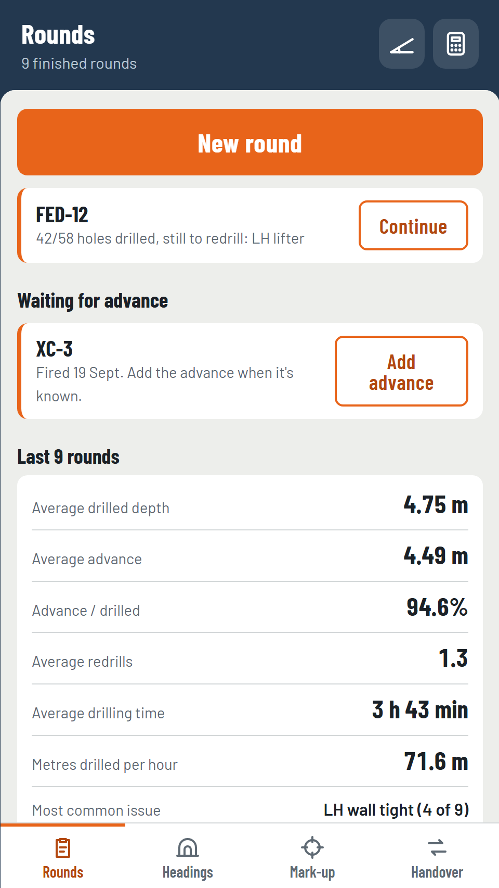
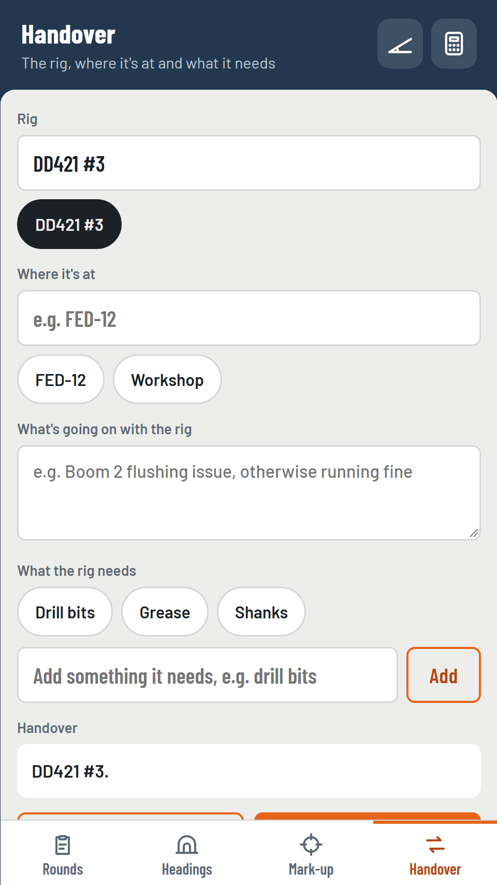

Rounds
Keep a record of every round: heading, chainage, holes drilled, advance, ground conditions and before and after face photos. A round can wait for its advance until after the fire.

Handover
Write up where the rig is, what's going on with it and what it needs, then copy the text for the next crew.
Headings and grade
See where each drive was last at, with several headings on the go at once. Work out side wall mark-up off the grade line, and the laser to floor through a change of grade.
Built for underground
- Works fully offline, with no signal, account or sign-in.
- Big buttons and high contrast, usable with gloves.
- Light and dark modes.
- Your data stays on your phone. Save a backup to Documents or send a copy when you want to.
Check it against the plan
FaceMarkup is a mark-up aid. It does not replace the survey plan or the surveyor's marks. Always check the result against the plan before drilling.